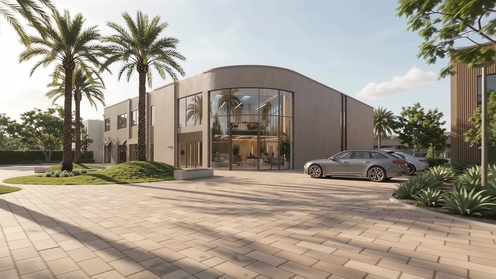

Version 01
Light
editorial
White ground, scroll-driven image grid, and an interactive map of the four Dubai venues.
View version 01
Version 02
Dark green
serif
Deep green and serif throughout, with pinned scroll sections and a full-bleed immersive hero.
View version 02